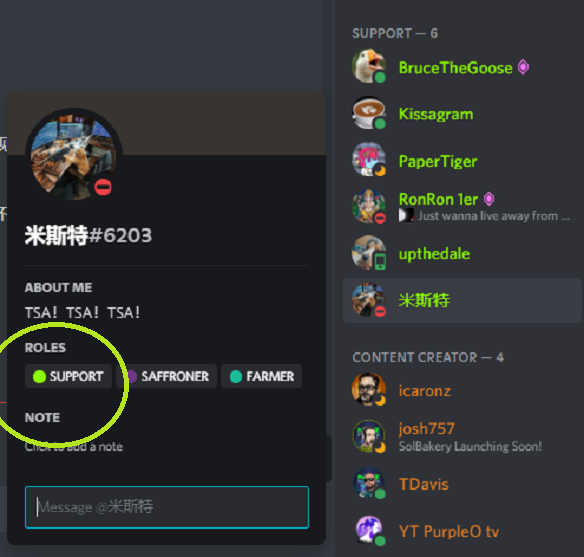
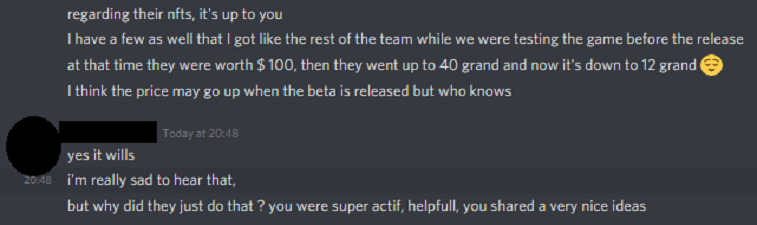

NON EXHAUSTIVE LIST OF THINGS THAT I DID FOR THE FARMING TALES PROJECT
Since the Farming Tales team tried to delete any trace of my existence and my contributions to the project as a co-founder, here in this page I am going to list some of the many things I did for the Farming Tales project before being kicked out (for asking who was the person that was going to pay me my cut of the half a million sale that we had 2 days later).
☝️ the post that I wrote and got into Trending thanks to my own contacts and that brought many Hive users into our Farming Tales Discord.
The FT team trying to delete traces of my contributions (eg. my name in Hive posts and my announcements in their Discord) ☝️
Link to the deletion: https://ecency.com/hive-151527/@farmingtales/did-you-just-say-3d-blockchain-game?history
How did I join the Farming Tales team? Let's take a little jump back in time..
I was contacted by the Farming Tales team asking to put together a Discord bot for them. They barely started working on the 3D game at that time so they needed to keep users busy and start giving a use to the many NFTs that they had sold them.
Since I had developed Discord bots already for 2 projects of mine, I was open to hear them out.
I got on a call with them, listened to their pitch, told them that I would be interested in getting their real-life part of the project going also in a family property of mine that is currently not used.
I did a thoroughly analysis of their project. I asked them what they though the strengths and weaknesses of their project were, the risks, the competitors, what roadmap they had in mind. And I ended up giving some advice based on the knowledge I had, plus some regulatory advice from experience gained during my current job for one of the biggest igaming companies in the world.
At no point in time I was told that someone in that group of 4 people (Phage, Lykos, Dual and LosingYou) was calling the shots. I was offered an equal share of the profits (20%). (( only 3 team members out of 4 attended the call (Dual did not) ))
During that meeting I already asked if they had formed a company, and since they only had a temporary solution in place they guaranteed they we would form one asap. I even offered to create one in the US myself (but got told no).
I immediately asked what were the expectations in terms of hours because I was extremely busy already. I just moved into my new house, had to help taking care of my son that was only 6 months old at that time, worked long hours already for my day job and tons of side projects (restaurants, airbnb, advisor for another startup).
I immediately told them that my rates were high so I wasn't sure if they could afford it, and that's also why they offered me instead an equal share of the project/company.
They gave me some numbers of the sales done up to that point, so I expressed my interest. I asked though if 8 hours during the weekend would have been enough because I was very busy. I was asked to work for them a couple of hours per day. They told me though that since I'm experienced I was probably super fast.. so what would take another developer 12 hours I could do it in 2 hs (first red flag).
I left the call saying that I would think about it, that I wasn't 100% sure because I had a lot going on. To convince me I was told by the "initial-founder" of Farming Tales that if I joined they would split with me their 2nd sale that was still ongoing at that time.
We left the call that way and in the meantime they already put out the announcement that they gave the task to a new member of their team to create for them a Discord game using a bot. That was put out in order to create more hype for the ongoing sale. But I didn't really say yes yet.. lol
I joined their call the following day and agreed to join their project.
I would say that the announcement of the Discord game caused a lot more interest in the users. In fact many joined during those hours (see screenshots). The sale was already open and got sold out a few hours after the announcement.
After a couple of days I showed them a first prototype of the bot already working and proceeded with adding more and more features. I designed the bot to interact with 2 different blockchains: Wax to retrieve the list of the NFTs and Hive to store their data (eg. token balance).
I came up with a way to let users sign up to our game letting them link their Discord account to a wax account.
The list of tasks I worked on afterward is really long, I kept adding features every time I had a second in my day. (see a non-exhaustive list in the section below).
It is also worth mentioning that I was able to release an alpha version of the bot in just about 5 days because I re-used also some of the code that I wrote for another project of mine that I already spent a lot of time on.
Despite all this, I was only given a small part of the initial sale even though I was told differently by the initial-founder during our first call and despite my bot bringing so much hype to the project. That was another red flag on the trustability of the people behind the project. Shortly after I was given more money coming from the marketplace fees though, and it was a decent amount, so I decided to continue working with them with all the trouble that came with it.
For example, after a few days I found out that they collected quite some money from investors and promised a game by October but had very little of the game done and their estimates were based on nothing. Therefore they were pushing me to do always more work, contacting me also during my workday and being rude if I told them I was not available.
Eg. the initial-founder was rude saying that he wasted a couple days because my work wasn't ready. It could not be done faster working part-time and keeping the bar of quality acceptable. Another red flag of many that followed.
They were overall unable to estimate their work due to lack of experience in the sector. For example they learned by themselves how to work with Unity (with no basic understanding of computer science) and the team member that was a bit more skilled on it got burnout working non-stop for a few days because they were working without a real plan. Then they realized that the whole backend wasn't ready and it wasn't a fast task so he ended up sitting and waiting to be able to progress his work. This in my opinion was due to poor project management and understandment of the Software Development Life Cycle. Furthermore there were poor requirements specifications (that for example caused some big bugs than I had to work long hours to fix afterwards - eg. harvesting logic). Plus poor understanding of the development process and testing.
Did I suck? Am I a terrible and lazy software engineer? (my resume' seems to disagree too)
The initial-founder just 9 days before kicking me out confirmed that he was satistfied with my performance. [in this screenshot like in many others he also confirmed that all partners had equal shares in the project]
So, replying to my own question above.. no. I was trying to keep the bar of quality at an acceptable level (eg. set up test environments and wanted to use the wax testnet instead of testing in production [very bad practice]) but the team preferred faster solutions, cutting corners and reducing quality. And (always in my opinion) we saw the result with all the issues that came with the game and the alpha extended from just a few days to almost a month and a quite slow feature release pace.
SOME OF THE SACRIFICES I DID to work on the Farming Tales project:
- I just moved into a new house that I purchased and it wasn't even fully furnished. The day I was kicked off the FT team I still had boxes to unpack all over my room floor because I hadn't had any free time.
- I missed the first time my 6-month old son crawled because I was working on FT.
- I slept 0 hours when I launched the bot because I had to fly up to NY (from Florida) early the following morning for work.
- I didn't work on an article that the CTO of my company asked me to work on. That had some financial consequences too.
- Poor quality of repairs and work done on my brand-new house because I did not have time to supervise.
- Almost neglected my other side businesses causing some loss of revenue there too.
- Etc etc
I thought I was doing some sacrifices for some long-term decently sized income. And instead I got screwed over.
SOME OF THE THINGS I DID that helped FT getting successful:
(Note: I'm not going in chronological order or in order of importance)
USER ENGAGEMENT
I was one of the most active team members constantly engaging with our users. The rest of the team was based in Italy so I was the only one online during their late night messaging with the FT Discord users and replying to their questions.
Marketing advice
I helped a few times the Marketing manager with some English corrections. Either corrected by me or my wife (English is her native language).
Some posts on social media were written with a broken English so I suggested to implement a review process.
I reviewed the banner that they still use on all social media and suggested to add some important buzzwords (like NFT) that were missing.
Both these pictures were taken by me during my work travels to New York:
- The team was bothered by users asking questions and messaging the team members. I explained them the importance of being customer-centric, bringing also as example the cost of acquiring new users that popular companies budget for. I also pushed for training better our support team and rewarding them more often.
BOT COMMANDS
The team was wasting lots of time replying always to the same questions that were in the whitepaper already so I came up with the idea of using a bot command.
Other things I worked on, as per the blog stored immutably on the Hive blockchain:
- - Mr. Harvey (game)
( I also delegated 5,000 HIVE in order to be able to write into the Hive blockchain at the rate that we needed )
(my very first tests with Mr. Harvey [name I came up with, by the way])

(sneak peak of my discord bot)

(announcment for Polly)
(the public database with 500 users using it immediately after the launch of my bot)
(I have a screenshot of all my announcements, they deleted them all after banning me)
- - Polly, the parrot ([not yet AI-powered] chatbot and lottery)
.png)
.png)
- - Calendar-bot (used to daily remind the team about scheduled meetings)
.png)
- - All the other commands:
- sign up - process that I came up with to let users safely link their wax account on Discord
- account lookup - Hive blockchain lookup for their wax name and URL to their record in the DB
- harvest command - interacted with 2 blockchains, some fairly complex logic behind the scenes
- balance command - read the Hive blockchain for the user SEST balance
- whitepaper - this command saved, together with the FAQs idea, saved a lot of time to the core team and the support team
- rewards - list of NFTs programmatically ordered by higher rewards, embedded links to the marketplace [my idea]
- leaderboard (my idea)
- parrot -- and all the coding behind it: dumb replies, jokes, use of other peoples messages, NFT lottery, etc etc.
Private commands:
- !stats - used to monitor all metrics related to the user engagement and bot use
- !update-records - used to interact with 3 systems: Hive, Wax and Discord APIs
- !review - to review flagged message at a later time. A copy of the original message was programmatically posted in a dedicated channel.
Recruitment
I interviewed (and rejected) a developer pushed forward by the Marketing manager.
Added to the support team thanks to me pushing for it: journalist, real-farmer, contacts with Community-supported agriculture representatives.
- Recruited by me: support, admin of the chinese channel

The "marketing manager" was against promoting that user to Support and even rejected my suggestion of getting the white paper translated into Chinese because he thought that "we won't attract many Chinese users, Cryptocurrencies are not even legal there". And now most of their users are from China.. lol
Youtubers
I made a call/interview (not a live) with one of the youtubers that used to broadcast about their project.
I was the one talking 90 % of the time since I was the only one fluent in English (I have been living in English speaking countries for almost a decade).
Atomic hub verification interview
I did most of the whitelisting interview with the Atomic Hub team.
I remember one of the comments from one of the co-founders afterwards: "did you see their face when Gabe told them where he works?". Yeah, that for sure helped since the game was not fully working end to end yet when I demoed it. I gave them a good explanation of the architecture and our plans though, so we passed.
The other team members were very silent during that call because they were aware of their poor english or just because they were too nervous to talk. Even when I asked them to cover for me for a couple minutes while I was trying to find a link to show them the game in real time, no one spoke and there was an awkard silence.
I believe that I can state that it's also thanks to me that the game got verified with the Atomic Hub team. That event helped the success of the project a lot too.

The Farming Tales articles got into Trending in Hive twice
..attracting many users to our Discord.
- I personally contacted some contacts of mine and reblogged the articles from the high-reputation accounts I use on Hive for my own projects.
There was a huge spike of users joining our Discord server during those days.
After this post on Hive in which we promised to integrate Hive more, the founders though shortly after decided instead to cut Hive out only because it experienced some glitches. I explained that it was because we deprioritized some tasks that would have made us more stable while using it (eg. rotate nodes, queue requests to make sure that we didnt write more than once per block, etc) -- no luck.
And again.. lol they removed my name from the last article.. after I wrote it and got it into Trending. So I can claim that I suspect that to some extent they used me like they used the previous guy that they fired.. quote from one of their discord channels: (ita) "i contatti che fortunatamente ha tirato in mezzo Floppy fanno la differenza" (Floppy's contacts luckily are making a big difference for us). He was then kicked off the project too. Their users now don't even know he existed. Like the FT team now tried to do with me.. 😏
Discord channels that were my ideas:
Public:
- #our-social-media - still in use to post social media stuff
- #faq - still heavily used, saved tons of time to the core team and support team
- #chinese channel - the team as usual ignored user messages. I linked them to that request and I created it.
Private:
game - game dev discussions
game-test - channel where I gave some of my consulting knowledge about testing and where we coordinated testing efforts with the support team (despite the initial-founder saying "well, there isn't really much to test" - lol)
cose-nerd - technical discussions
nuove-idee - new ideas, I had many and they are still probably going to implement some or use some of the advice/knowledge I gave them
marketing-discussions - lots of improvements were needed on the marketing side, so I suggested that we created a channel to discuss them (eg. review the tweets, discuss new marketing ideas)
scrum-ceremonies - channel in which my bot posted the Scrum ceremonies meeting reminders
faqs-proposals - created by me to discuss points to add to our FAQs, based on how many times users asked the same questions over and over. Save everyone a lot of time to focus on the important things for the success of the project.
bots-stuff (Discord channels category)
~~ bot error logs -> monitoring channel
~~ reported messages to review (detected by my bot with a specific command)
~~ stats channel -> to monitor user growth and engagement
{ success of the project I was a co-founder of.. }
Project Management skills and tools that I introduced:
- Scrum: since the team was quite disorganized when I joined, I introduced the team to the Scrum Agile methodology and tried to make them understand where it could help us. The team was happy to try it out. Some ceremonies were kept and others abandoned during the frenzy of the days before the sale / game launch.
- Jira: I introduced and setup this platform to allow them to collaborate better and have visibility on what everyone was working on and synch better: estimates, priorities and the roadmap.
Same here, close to the sale / game launch the team went back to being quite unstructured. That resulted for example in the initial-founder (thank to god) posting a draft of the announcement of the 3D game launch that I noticed had in it a feature that we did not implement. - Confluence pages (eg. my architecture diagram that explained how to integrate the full stack: Unity, the webpage, the backend, the cloud provider and the 2 blockchains that we intended to use).
- Retrospective meeting dashboard - to collect feedback, discuss issues and solutions. Due to time contrainsts we did this only once. The team later on told me I was not following well directions and I replied that I did not agree (unless I was pushing back on bad technical decisions) and that if felt that way they could have used those session to provide feedback.
.png)
All these above are now gone for their project. But we are using them pretty successfully in my new team for my own 3D game, Crypto - Shots.
Project design and Architecture
I designed some crucial parts of the game architecture
The initial-founder of the Farming Tales project at first wanted to put the inventory and the claim/marketplace buttons in a webpage and have a smaller window in that page with the 3D game that did nothing except let the user explore the virtual farm. I pushed back on that idea, it was a cheap solution and a poor user experience. I explained how the Unity game could be full screen with some web static elements displayed on the top of it. And how most of the business logic didn't have to live inside the Unity game.
When I joined the project the team wanted to interact with the wax blockchain directly from the Unity code. I designed a solution for which they only had to send HTTP requests to a server and I shared some documentation on how to do so.In order to cut corners and get the game out quickly, the initial-founder a few days later told the team that he decided that the inventory and buttons that interacted with the blockchain would live in a webpage and that the actual 3D game would be usable only in the Unity client.
I pushed back hard on that approach explaining how that would have been a poor user experience and how browsers can reach way more users than a Unity client.
This caused some initial conflict with the FT inital-founder but revelead to be the best approach. And it got proven by its success: the game is now making 1/2 million dollars a month only in marketplace fees! - thank you Gabe for pushing back.. but you won't get a cent of the money!After researching more, I shared with the team how we could make the Unity game interact with the WAX blockhain delegating some of that logic to the web wrapper code and the backend. This was going to take away the burden of dealing with the blockchain from the game devs that could focus on the in-game user experience instead.
According to the founder this was a common issue for Unity developers that other projects were struggling to resolve. I put together a proof of concept that revelaed that my approach was the right way to proceed. And we proceeded with that architectural design that is still in use nowadays and the whole architecture of the game is based on that approach that the team did not know when I joined them.
( some of my notes put toghether while I was working on the Farming Tales project )
Others:
- When we were at the very beginning and the team was trying to explain me the requirements for the backend, I was told that it had to run 24/7 and run the timers for users to tell them when they were ready to harvest (lol). I explained how we simply had to store some timestamps.
Promos
The double rewards promo and the half harvest time promo were my idea. I proposed them because I coded the bot in a way for which it was easy to trigger those promos simply changing a value in a config file.
At first the founders were skeptic because of the effect on the token inflation but once I showed them the stats of how much more users were engaging in our Discord thanks to the promos, and how the drop rate of users diminuished, the team was fully on board.
Those stats were collected programmatically by my bot and proved that those events attracted many users (creating hype/fomo and making the user base grow and getting the project more popular).
Thank you Gabe! (or not)
Note: after removing me from the project, they keep using time-based promos.
Security
Having years of experience in designing Secure systems and pentensting, I gave many advices on this matter during the design and implementation phases. I recommended Secure practices for behavioural best pratices (eg. passwords), architectural and implementation aspects of the project. I hardened every part of the stack I worked on (more quality work invisible to the team).
I found a security vulerability in minutes when I reviewed some code that a third party wrote for us. I suggested how to mitigate it and a couple of different ways.
{a minor example of always keeping an eye on security}
Public Relationships
- I reached out to the HiveFest organizers and reserved a slot to do a presentation of how I used / were going to use the Hive blockchain for our project.
This was then cancelled because I was removed from the team.
Unity development
I self learned the basics of Unity in a few days. This allowed me to work on:
- the proof-of-concept that proved the architectural solution that allowed us to programmatically interact with the wax blockchain
- the JS layer between Unity and the backend with hardened security and some UI static element displayed on top of the game.
- Unity UI elements and event handlers (C# and JS)
Eg.- Harvest+Claim panel elements (they were even more confusing before that)
- Session handlers, player resources and markeplace prices fetch and client-side caching, balances panel positioning, etc etc
Miscellanous:
- Minted an NFT from code for the first time in the Farming Tales team (ie. this)
- Monitoring and maintenance of my own server on which the bot was running (more invisible work for the rest of the team - at first there was no development process and the team was just spending a few hours a day on calls that I could not join because of the different timezone)
- Customer support to the bot users (bugs, investigations, account migrations, etc)
- Daily Polly transfers to winners. I was asked to expand the Calendar bot to send a reminder in one of the internal channels of the team but no one else ever picked up this task, despite me having many more tasks assigned to me than the others.
- Improvements to the bot made it easy for new users to purchase the FT NFTs and brought more revenue.
- Added support for 3rd party NFTs.
- Discord channels management (eg. missing descriptions, moved some as requested by users, etc)
- Drove testing efforts guiding the testers on where to focus their exploratory testing
- PS. The main "game-dev" guy was struggling figuring out how to design the placement system and I explained that all he had to do is send the JS layer the coordinates of the building. That's how they implemented at the end to store them on-chain.
{ support example - issues with one of the libraries used for the Hive blockchain }
(reached out a few times to Hive witnesses [block producers] to resolve issues)
.png)
Additional role created by me to allow some members of the support team to ban users - I proceeded that way because there were malicious users spamming scams and the rest of the team was sleeping. They agreed the day after to leave the role in place.
Chat with Discord users that were in the FT Discord since its early days
It looks like also the FT users that reached out to me think that a lot of the success that the FT project had was also thanks to me..
Gabe: their token alone, if they sell 1% of it over time.. it's 200 millions for each member of the team.. they got to that point also thanks to me..
User: yeah man no doubt
i know you had a hand in it, a large one
ive lived a long fucking live
and holding onto just anything isnt worth it
G: not even 200 millions that in theory are yours?
U: well then get fucking paid... legally if you have to...
[...] the only thing i can say is " I know he contributed a large part, and I wouldve considered him a cofounder"
G: all they achieved so far.. i worked on. They havent yet released anything new. So 20 % of all this earned so far should be mine too...
U: never give more than 50% without payment confirmatioon
and something this big man you really shouldve had something legal
tbh...kind of fucked up on that on....
not trying to be dick or anything but like ouch...big ass mistake..
next time i bet you dont make that mistake again..."
G: you think i didnt try? Almost every day and pissed them off
Another user:

.png)
This person also pointed me to this chart of their previous project, interesting.. I wasn't aware of that. 🙈
We'll see who can do better. They screwed over a team member.. and now they have a huge competitor that is going to annihilate them.
GAME ON! 😎
BACK TO THE HOME PAGE with all the articles
Nov 12th '20